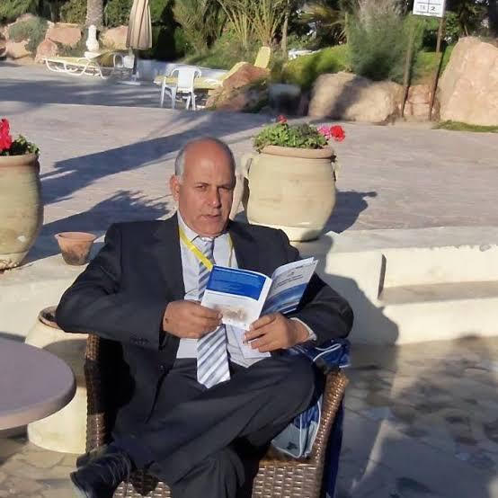

Prof. Mohsen Gammoudi
Intervenant
Mohamed Mohsen Gammoudi est professeur universitaire en informatique à l’ISAMM, Université de la Manouba. Titulaire d’un doctorat en informatique obtenu en 1993 au laboratoire I3S/CNRS, Sophia Antipolis, France, et de l’habilitation universitaire obtenue en 2005 à la Faculté des Sciences de Tunis, il a été professeur invité à l’Université fédérale du Maranhão, au Brésil, de 1993 à 1997, où il a également coordonné un groupe de recherche. Responsable de l’équipe ECRI au laboratoire RIADI.
Ses domaines de recherche portent notamment sur l’intelligence artificielle, l’apprentissage automatique fédéré, la fouille de données et l’analyse des concepts formels. Ses activités couvrent l’enseignement dans différentes institutions et l’encadrement doctoral. Auteur de plus de 94 publications scientifiques, il a contribué à la formation de nombreux doctorants et à l’encadrement de travaux de recherche. Il participe actuellement à des activités nationales d’expertise et d’évaluation scientifique en tant qu’expert-évaluateur auprès de l’ATEA et, entre 2018 et 2020, auprès de l’ANPR. Il participe également à des commissions de jurys universitaires de recrutement. Sa passion porte sur l’accompagnement des chercheurs et la structuration de démarches scientifiques rigoureuses, sans viser la quantité.